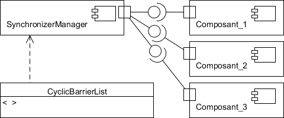
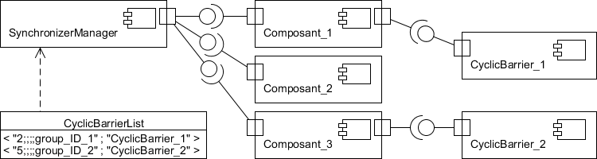
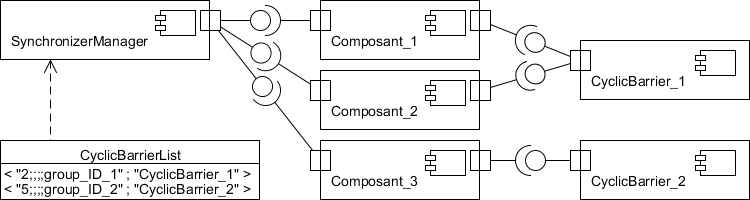

fr.upmc.components.extensions.synchronizer.components.syncTools.See: Description
| Class | Description |
|---|---|
| DistributedSynchronizerManager |
Le DistributedSynchronizerManager est une sous-classe du SynchronizerManager.
|
| SynchronizerManager |
Le SynchronizerManager va assurer la création de composants de synchronisation.
|
Le SynchronizerManager et le DistributedSynchronizerManager vont assurer la
création de composants de synchronisation, présents dans le package
fr.upmc.components.extensions.synchronizer.components.syncTools.
Le DistributedSynchronizerManager est une sous-classe du SynchronizerManager. Il est utilisé à la place de celui-ci pour créer les outils de synchronisation sur différentes JVM, alors que le SynchronizerManager créé les outils sur sa JVM. Cette version utilise le DynamicComponentCreator pour instancier les outils. C'est dans cette classe que l'on pourra définir des politiques de déploiement, par exemple pour répartir la charge sur différentes JVM.
Chacun va ouvrir un port qui va recevoir toutes les demandes de création de composants de synchronisation. Ce port offre l'interface SynchronizerManagerClientI (respectivement DistributedSynchronizerManagerClientI). Pour chaque nouvelle requête, nous allons recevoir un appel de méthode qui va correspondre au type de composant de synchronisation que nous voulons créer avec en paramètre un identifiant de groupe de synchronisation. Pour chaque type de composant de synchronisation, nous allons sauvegarder un dictionnaire contenant les ID de groupe reçus associés à l'URI du composant créé pour ce groupe. A chaque requête reçue, si l'ID de groupe donné existe déjà dans la liste, nous retournons juste l'URI de connexion du composant de synchronisation. Sinon on crée le composant de synchronisation avant de retourner son URI. Cette procédure est bien entendu thread safe.
Exemple

A la fin du déploiement, le gestionnaire et les composants sont instanciés et connectés.
Tous connaissent le SynchronizerManager, unique parmi toutes les JVM
(c’est quelque chose de très important, défini dans le code l’Assembly,
et qui permet d’assurer que chaque URI de barrière est unique).
Les composants qui ont besoin d’un outil de synchronisation vont se connecter
au gestionnaire et lui envoyer leurs demandes de barrières, en appelant
les méthodes provide[type_de_la_barrière]URI(mon_ID_de_groupe).
Composant_1 : SynchronizerManager.provideCyclicBarrierURI("2;;;;group_ID_1")
Composant_3 : SynchronizerManager.provideCyclicBarrierURI("5;;;;group_ID_2")

Le Manager regarde si ces identifiants de groupe ont déjà été enregistrés.
Dans ce cas-ci, les identifiants n’étant pas renseignés, le Manager va donc
créer chaque barrière en décomposant les ID de groupe : le premier chiffre récupéré
va servir de paramètre au constructeur de la CyclicBarrier.
Le compteur incrémenté va permettre de former l’URI.
Les deux barrières créées, leurs URI sont renvoyées.
Il est à noter que l’on renvoie l’URI du port de connexion et que c’est au client
de s’y connecter pour obtenir l’URI du port d’utilisation.
Le but est d’alléger au maximum le travail effectué par le SynchronizerManager,
celui-ci étant une ressource critique utilisée par tous les composants
(les Hashtable sont accédées de manière « synchronized »),
le temps de réponses aux requêtes doit être très court.
Composant_2 : SynchronizerManager.provideCyclicBarrierURI("2;;;;group_ID_1")

Le Manager reçoit la requête et regarde la liste des CyclicBarrier.
L’ID de groupe est déjà associé à une barrière,
son URI est retournée et Composant_2 peut s’y connecter.